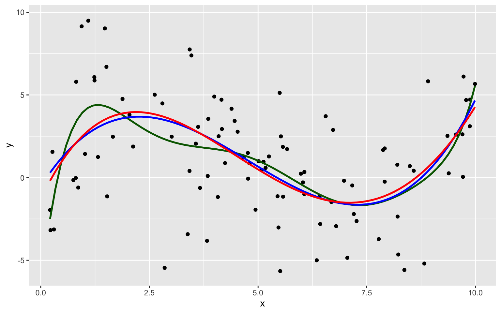

Chapter 7 Predictive Modeling
Learning Outcomes:
- Explain how prediction error changes, depending on model complexity, for both training data and test data.
- Explain the variance bias tradeoff, and identify situations when predictions might be impacted by either variance or bias.
- Describe how overfitting can impact prediction accuracy.
- Explain how and why we use cross-validation in predictive modeling.
- Compare and contrast Ridge regression and ordinary least squares regression.
- Explain the role of the parameter \(\lambda\) is Ridge regression.
- Given possible sets of regression coefficients, determine which would be optimal, using either ordinary least squares, Ridge regression, or Lasso regression.
- Compare and contrast the assumptions made in decision trees, to those in the normal error regression model.
- Given possible splits for a node in a decision tree, determine which is optimal.
- Explain how the depth of a tree impacts prediction variance and bias, and overfitting.
- Describe how decision trees in a random forest differ from one another.
- Explain the process of fitting a polynomial spline to data, and the impact the the number of knots has on the process.
- Explain the assumptions made in predictive modeling, and identify situations where these assumptions might be inappropriate or problematic from an ethical standpoint.
7.1 Modeling for Prediction
7.1.1 Overview
We’ve previously learned how to build models for the purpose of interpretation, when our primary focus is on understanding relationships between variables in the model. In this chapter, we’ll examine how to build models for situations when we are not interested in understanding relationships between variables, and instead care only about making the most accurate predictions possible.
We’ve seen that when we model for interpretation, we encounter a tradeoff between model complexity and interpretability. We wanted to choose a model that is complex enough to reasonably approximate the structure of the underlying data, but at the same time, not so complicated that it becomes hard to interpret. When modeling for prediction, we don’t need to worry about interpretability, which can sometimes make more complex models more desirable. Nevertheless, we’ll encounter a different kind of tradeoff, involving model complexity, that we’ll have to think about, and we’ll see that more complex models do not always lead to better predictions.
Predictive Modeling Vocabulary
The new data on which we make predictions is called test data.
The data used to fit the model is called training data.
In the training data, we know the values of the explanatory and response variables. In the test data, we know only the values of the explanatory variables and want to predict the values of the response variable.
7.1.2 Illustration of Predictive Modeling
The illustration shows observations from a simulated dataset consisting of 100 observations of a single explanatory variable \(x\), and response variable \(y\). We want to find a model that captures the trend in the data and will be best able to predict new values of y, for given x.

We’ll fit several different polynomial models to the data, increasing in complexity from the most simple model we could possibly use, a constant model, to a very complex eighth degree polynomial model.
Constant Model to Sample Data
Linear Model to Sample Data

Quadratic Model

Degree 3, 4, and 8 Models
We continue exploring higher order polynomial models. The blue curve represents a third degree (cubic) polynomial model, while the red curve represents a fourth degree (quartic) model and the green represents an eighth degree model.

We see that the flexibility of the model increases as we add higher-order terms. The curve is allowed to have more twists and bends. For higher-order, more complex models, individual points have more influence on the shape of the curve. This can be both a good and bad thing, as it allows the model to better bend and fit the data, but also makes it susceptible to the influence of outliers.
7.1.3 Predicting New Data
Now, suppose we have a new dataset of 100, x-values, and want to predict \(y\). The first 5 rows of the new dataset are shown
| x | Prediction |
|---|---|
| 3.196237 | ? |
| 1.475586 | ? |
| 5.278882 | ? |
| 5.529299 | ? |
| 7.626731 | ? |
We fit polynomial models of degree 0 through 8 to the data. Note that although we did not show the 5th through 7th degree models in our illustrations, we’ll still fit these to the data.
Sim_M0 <-lm(data=Sampdf, y~1)
Sim_M1 <-lm(data=Sampdf, y~x)
Sim_M2 <- lm(data=Sampdf, y~x+I(x^2))
Sim_M3 <- lm(data=Sampdf, y~x+I(x^2)+I(x^3))
Sim_M4 <- lm(data=Sampdf, y~x+I(x^2)+I(x^3)+I(x^4))
Sim_M5 <- lm(data=Sampdf, y~x+I(x^2)+I(x^3)+I(x^4)+I(x^5))
Sim_M6 <- lm(data=Sampdf, y~x+I(x^2)+I(x^3)+I(x^4)+I(x^5)+I(x^6))
Sim_M7 <- lm(data=Sampdf, y~x+I(x^2)+I(x^3)+I(x^4)+I(x^5)+I(x^6)+I(x^7))
Sim_M8 <- lm(data=Sampdf, y~x+I(x^2)+I(x^3)+I(x^4)+I(x^5)+I(x^6)+I(x^7)+I(x^8))We predict the values of the new observations, using each of the 9 models.
Newdf$Deg0Pred <- predict(Sim_M0, newdata=Newdf)
Newdf$Deg1Pred <- predict(Sim_M1, newdata=Newdf)
Newdf$Deg2Pred <- predict(Sim_M2, newdata=Newdf)
Newdf$Deg3Pred <- predict(Sim_M3, newdata=Newdf)
Newdf$Deg4Pred <- predict(Sim_M4, newdata=Newdf)
Newdf$Deg5Pred <- predict(Sim_M5, newdata=Newdf)
Newdf$Deg6Pred <- predict(Sim_M6, newdata=Newdf)
Newdf$Deg7Pred <- predict(Sim_M7, newdata=Newdf)
Newdf$Deg8Pred <- predict(Sim_M8, newdata=Newdf)In fact, since these data were simulated, we know the true value of \(y\), so we can compare the predicted values to the true ones.
kable(Newdf %>% dplyr::select(-c(samp)) %>% round(2) %>% head(5))| x | y | Deg0Pred | Deg1Pred | Deg2Pred | Deg3Pred | Deg4Pred | Deg5Pred | Deg6Pred | Deg7Pred | Deg8Pred | |
|---|---|---|---|---|---|---|---|---|---|---|---|
| 108 | 5.53 | 5.49 | 1.17 | 1.05 | 0.41 | -0.14 | -0.30 | 0.10 | 0.40 | 0.25 | 0.31 |
| 4371 | 2.05 | 3.92 | 1.17 | 1.89 | 2.02 | 3.66 | 3.95 | 4.26 | 3.82 | 3.37 | 3.49 |
| 4839 | 3.16 | 1.46 | 1.17 | 1.63 | 1.29 | 3.24 | 3.35 | 2.78 | 2.24 | 2.15 | 2.07 |
| 6907 | 2.06 | 6.79 | 1.17 | 1.89 | 2.02 | 3.66 | 3.95 | 4.25 | 3.80 | 3.36 | 3.47 |
| 7334 | 2.92 | -1.03 | 1.17 | 1.68 | 1.42 | 3.43 | 3.60 | 3.14 | 2.51 | 2.31 | 2.25 |
7.1.4 Evaluating Predictions - RMSPE
For quantitative response variables, we can evaluate the predictions by calculating the average of the squared differences between the true and predicted values. Often, we look at the square root of this quantity. This is called the Root Mean Square Prediction Error (RMSPE).
\[ \text{RMSPE} = \sqrt{\displaystyle\sum_{i=1}^{n'}\frac{(y_i-\hat{y}_i)^2}{n'}}, \]
where \(n'\) represents the number of new cases being predicted.
We calcuate RMSPE for each of the 9 models.
RMSPE0 <- sqrt(mean((Newdf$y-Newdf$Deg0Pred)^2))
RMSPE1 <- sqrt(mean((Newdf$y-Newdf$Deg1Pred)^2))
RMSPE2 <- sqrt(mean((Newdf$y-Newdf$Deg2Pred)^2))
RMSPE3 <- sqrt(mean((Newdf$y-Newdf$Deg3Pred)^2))
RMSPE4 <- sqrt(mean((Newdf$y-Newdf$Deg4Pred)^2))
RMSPE5 <- sqrt(mean((Newdf$y-Newdf$Deg5Pred)^2))
RMSPE6 <- sqrt(mean((Newdf$y-Newdf$Deg6Pred)^2))
RMSPE7 <- sqrt(mean((Newdf$y-Newdf$Deg7Pred)^2))
RMSPE8 <- sqrt(mean((Newdf$y-Newdf$Deg8Pred)^2))| Degree | RMSPE |
|---|---|
| 0 | 4.051309 |
| 1 | 3.849624 |
| 2 | 3.726767 |
| 3 | 3.256592 |
| 4 | 3.283513 |
| 5 | 3.341336 |
| 6 | 3.346908 |
| 7 | 3.370821 |
| 8 | 3.350198 |
The third degree model did the best at predicting the new data.
Notice that making the model more complex beyond third degree not only didn’t help, but actually hurt prediction accuracy.
7.1.5 Training Data Error
Now, let’s examine the behavior if we had fit the models to the data, instead of the test data.
RMSE0 <- sqrt(mean(Sim_M0$residuals^2))
RMSE1 <- sqrt(mean(Sim_M1$residuals^2))
RMSE2 <- sqrt(mean(Sim_M2$residuals^2))
RMSE3 <- sqrt(mean(Sim_M3$residuals^2))
RMSE4 <- sqrt(mean(Sim_M4$residuals^2))
RMSE5 <- sqrt(mean(Sim_M5$residuals^2))
RMSE6 <- sqrt(mean(Sim_M6$residuals^2))
RMSE7 <- sqrt(mean(Sim_M7$residuals^2))
RMSE8 <- sqrt(mean(Sim_M8$residuals^2))Degree <- 0:8
Test <- c(RMSPE0, RMSPE1, RMSPE2, RMSPE3, RMSPE4, RMSPE5, RMSPE6, RMSPE7, RMSPE8)
Train <- c(RMSE0, RMSE1, RMSE2, RMSE3, RMSE4, RMSE5, RMSE6, RMSE7, RMSE8)
RMSPEdf <- data.frame(Degree, Test, Train)
RMSPEdf## Degree Test Train
## 1 0 4.051309 3.431842
## 2 1 3.849624 3.366650
## 3 2 3.726767 3.296821
## 4 3 3.256592 2.913233
## 5 4 3.283513 2.906845
## 6 5 3.341336 2.838738
## 7 6 3.346908 2.809928
## 8 7 3.370821 2.800280
## 9 8 3.350198 2.799066Notice that the most complex model achieves the best performance on the training data, but not on the test data.
As the model complexity grows, the model will always fit the training data better, but that does not mean it will perform better on new data. It is possible to start modeling noise, rather than true signal in the training data, which hurts the accuracy of the model when applied to new data.
7.1.6 Graph of RMSPE

- Training error decreases as model becomes more complex
- Testing error is lowest for the 3rd degree model, then starts to increase again
7.1.7 Best Model
Of the models we looked at, the third degree model does the best. The estimates of its coefficients are shown below.
summary(Sim_M3)##
## Call:
## lm(formula = y ~ x + I(x^2) + I(x^3), data = Sampdf)
##
## Residuals:
## Min 1Q Median 3Q Max
## -8.9451 -1.7976 0.1685 1.3988 6.8064
##
## Coefficients:
## Estimate Std. Error t value Pr(>|t|)
## (Intercept) -0.54165 1.26803 -0.427 0.670221
## x 4.16638 1.09405 3.808 0.000247 ***
## I(x^2) -1.20601 0.25186 -4.788 0.00000610 ***
## I(x^3) 0.08419 0.01622 5.191 0.00000117 ***
## ---
## Signif. codes: 0 '***' 0.001 '**' 0.01 '*' 0.05 '.' 0.1 ' ' 1
##
## Residual standard error: 2.973 on 96 degrees of freedom
## Multiple R-squared: 0.2794, Adjusted R-squared: 0.2569
## F-statistic: 12.41 on 3 and 96 DF, p-value: 0.0000006309In fact, the data were generated from the model \(y_i = 4.5x - 1.4x^2 + 0.1x^3 + \epsilon_i\), where \(\epsilon_i\sim\mathcal{N}(0,3)\)
We compare the true expected response curve (in yellow) to the estimates from the various polynomial models.

The 8th degree model performs worse than the cubic. The extra terms cause the model to be “too flexible,†and it starts to model random fluctuations (noise) in the training data, that do not capture the true trend for the population. This is called overfitting.

7.2 Variance-Bias Tradeoff
7.2.1 What Contributes to Prediction Error?
Suppose \(Y_i = f(x_i) + \epsilon_i\), where \(\epsilon_i\sim\mathcal{N}(0,\sigma)\).
Let \(\hat{f}\) represent the function of our explanatory variable(s) \(x^*\) used to predict the value of response variable \(y^*\). Thus \(\hat{y}^* = f(x^*)\).
There are three factors that contribute to the expected value of \(\left(y^* - \hat{y}\right)^2 = \left(y^* - \hat{f}(x^*)\right)^2\).
Bias associated with fitting model: Model bias pertains to the difference between the true response function value \(f(x^*)\), and the average value of \(\hat{f}(x^*)\) that would be obtained in the long run over many samples.
- for example, if the true response function \(f\) is cubic, then using a constant, linear, or quadratic model would result in biased predictions for most values of \(x^*\).Variance associated with fitting model: Individual observations in the training data are subject to random sampling variability. The more flexible a model is, the more weight is put on each individual observation increasing the variance associated with the model.
Variability associated with prediction: Even if we knew the true value \(f(x^*)\), which represents the expected value of \(y^*\) given \(x=x^*\), the actual value of \(y^*\) will vary due to random noise (i.e. the \(\epsilon_i\sim\mathcal{N}(0,\sigma)\) term).
7.2.2 Variance and Bias
The third source of variability cannot be controlled or eliminated. The first two, however are things we can control. If we could figure out how to minimize bias while also minimizing variance associated with a prediction, that would be great! But…
The constant model suffers from high bias. Since it does not include a linear, quadratic, or cubic term, it cannot accurately approximate the true regression function.
The Eighth degree model suffers from high variance. Although it could, in theory, approximate the true regression function correctly, it is too flexible, and is thrown off because of the influence of individual points with high degrees of variability.

7.2.3 Variance-Bias Tradeoff
As model complexity (flexibility) increases, bias decreases. Variance, however, increases.

In fact, it can be shown that:
\(\text{Expected RMSPE} = \text{Variance} + \text{Bias}^2\)
Our goal is the find the “sweetspot†where expected RMSPE is minimized.
7.2.4 Modeling for Prediction
- When our purpose is purely prediction, we don’t need to worry about keeping the model simple enough to interpret.
- Goal is to fit data well enough to make good predictions on new data without modeling random noise in the training (overfitting)
- A model that is too simple suffers from high bias
- A model that is too complex suffers from high variance and is prone to overfitting
- The right balance is different for every dataset
- Measuring error on data used to fit the model (training data) does not accurately predict how well model will be able to predict new data (test data)